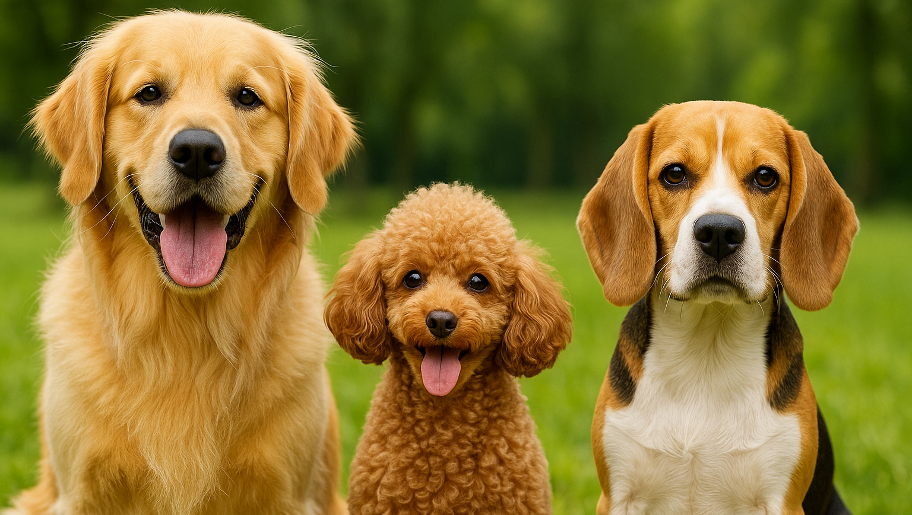

Собаки
Собака — плацентарное млекопитающее отряда хищных семейства псовых. Некоторые учёные считают собак подвидом волка.
Собака — плацентарное млекопитающее отряда хищных семейства псовых. Некоторые учёные считают собак подвидом волка.

Кошка (лат. Felis catus) — домашнее животное, млекопитающее семейства кошачьих отряда хищных. В русском языке слово «кошка» означает либо представителя вида Felis catus вообще независимо от пола, либо самку этого вида. Самца называют «кот», а детёныша кошки — «котёнок» (мн. ч. — «котята»).
Лошадь — крупное непарнокопытное животное семейства лошадиных. Это единственный современный род семейства лошадиных (Equidae) отряда непарнокопытных.
Домашнее кролик — одомашненная разновидность дикого (европейского) кролика. Отличается от диких предков многообразием размеров, окрасов, структурой шерсти.
В зоологии — небольшой грызун с толстым неуклюжим телом и развитыми защёчными мешками, живущий в норах и собирающий в них большие запасы зёрен, семечек и т. п..
Корова - это парнокопытное жвачное взрослое животное женского рода, которое держат фермеры или сельские жители для получения продуктов питания: молоко, сливок, сметаны, масла, кожи, мяса.Корова принос потомство - телят, которых выращивают для различных целей.
Парнокопытное млекопитающее (домашний вид которого разводят для получения мяса, сала, кожи) с крупным телом, короткими ногами и удлиненной мордой с круглым хрящевидным носом.
В биологии — небольшое млекопитающее отряда насекомоядных, спина и бока которого покрыты острыми иглами.
Морская свинка (лат. Cavia porcellus) — вид одомашненных грызунов из рода свинок семейства свинковых. Несмотря на название, не связаны с семейством свиней и не являются морскими животными.